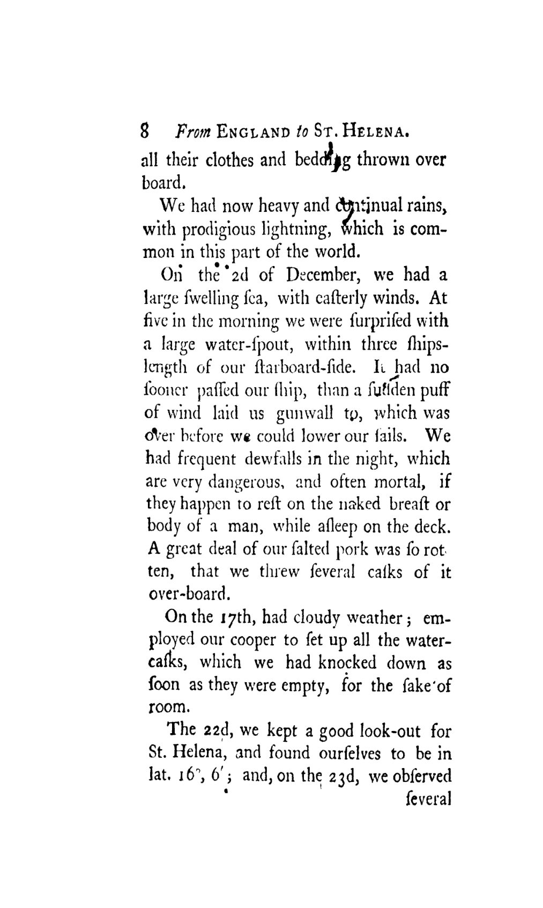
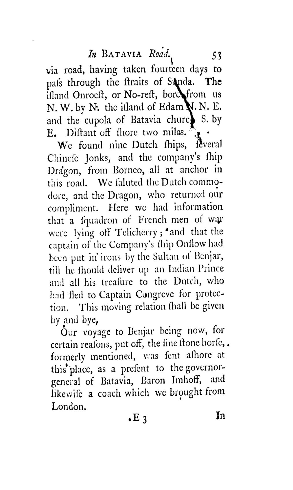
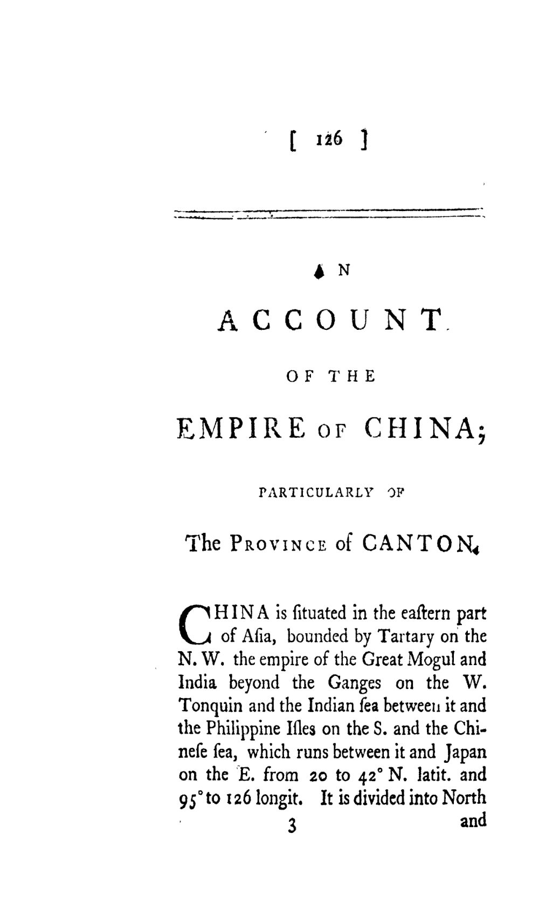
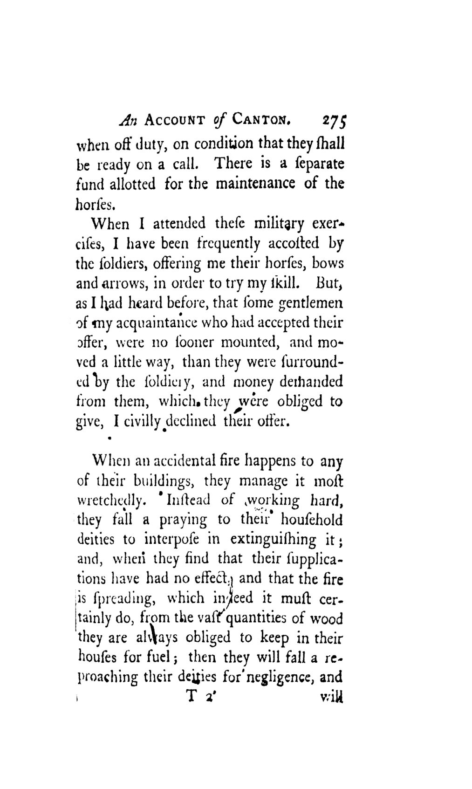
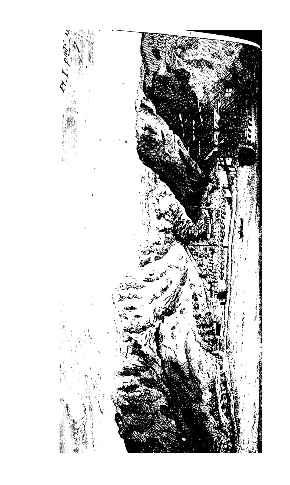
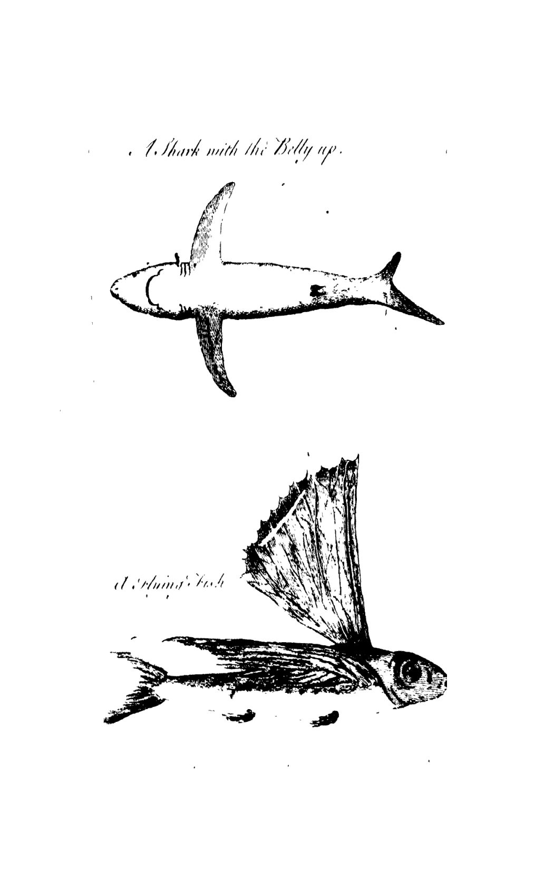
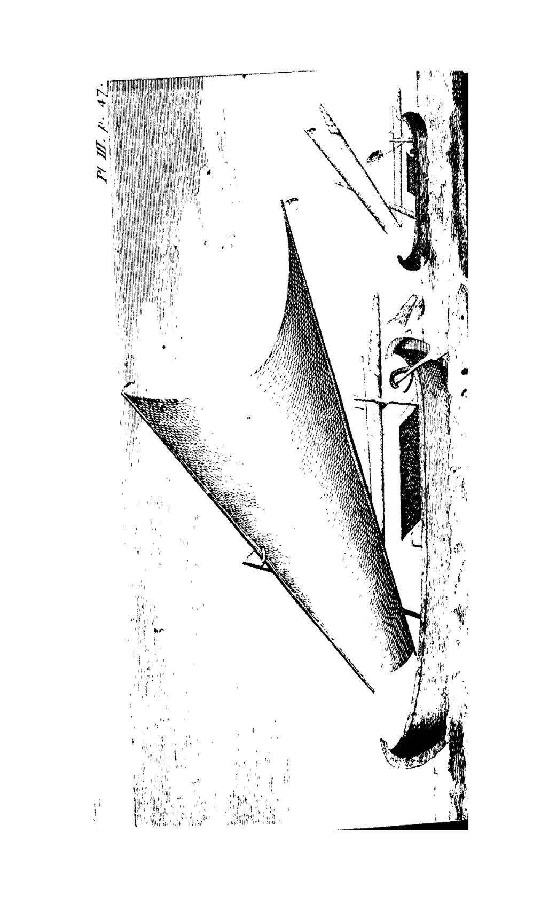

The route
Follow the ship from the Atlantic to Canton
About this book
A shipboard memoir of a voyage to the East Indies in 1747–48 — stopping at the lonely island of St. Helena, the tropical island of Java, the Dutch colonial capital of Batavia, and the fabled trading port of Canton in the Empire of China. Charles Frederick Noble, an English seafarer, records the Dutch government's conduct, and the manners, customs and religious ceremonies of the peoples he met, with the curious observations and anecdotes of an 18th-century traveller.
Explore the book
Choose a thread or chapter to start reading

The Voyage Out
The sea-journal: leaving England, a female volunteer found aboard, the customs at the Tropic and the Equator, and the lonely rock-island of St. Helena with its strange little society.

Java, Batavia & Madura
The Dutch emporium of Batavia, the island of Java, the 'Mutqueto' fly and the thief-catchers — and the heartbreaking dethronement of the King of Madura, delivered by the English to his enemies.

The Empire of China
From the Straits to China: the emperor, his palace and throne, a land with no lawyers, its printing, laws, armies and the ceremonial reception of ambassadors.

Canton & Its People
The shops and streets of Canton: fishes sold alive, rats and dogs in the markets, blind beggars, the rude rabble, the author's attempt to glimpse the Chinese ladies — and the comforts and curiosities of the English factory.
A timeline
A chronological spine of the book
Notable stories
The episodes that stopped us — retold with comic panels
Batavia, the Dutch Emporium
The richest trading city on earth, its canals and mint, its 'Mutqueto' fly and its ruthless thief-catchers.
Canton Oddities — Rats for Supper and an English Sailor's Adventure
Fishes sold alive, dogs and rats in the markets, blind beggars, and an author's doomed attempt to glimpse the Chinese ladies.
The Empire of China — No Lawyers and an Unseen Emperor
A vast empire where lawyers are forbidden, printing is ancient, and the emperor rules from a throne few have ever laid eyes on.
The Female Volunteer — a Woman Aboard
Among the press of men scrambling onto the outward-bound Indiaman, one 'volunteer' turns out to be a woman.
The Dethroned King of Madura — 'What Is Pity Without Assistance?'
A deposed island king throws himself on an English ship for protection — and is 'tragically delivered' back to his enemies.
St. Helena, the Prison Rock
An 'impregnable' Atlantic rock, thick with rats, where a society of planters, soldiers and slaves keeps its own little scandals.
Preserved plates
The engraved relics kept whole


